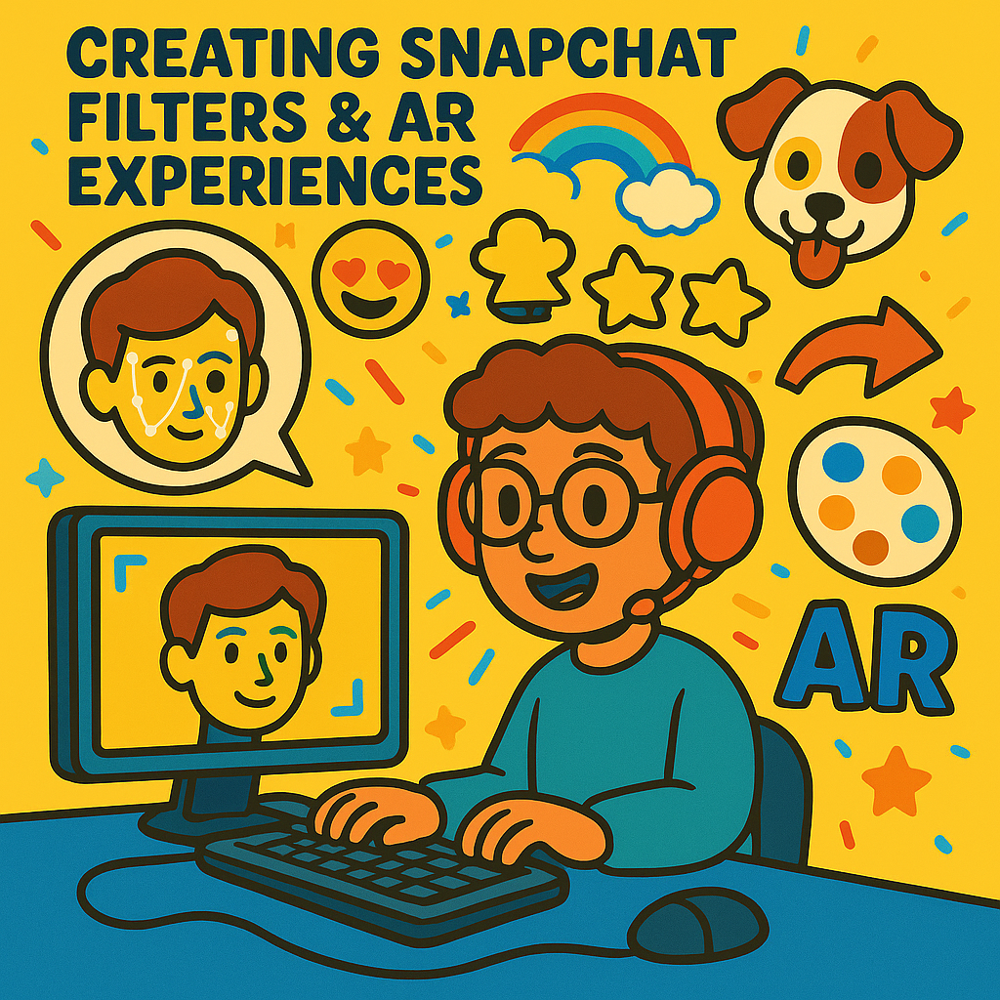

I’m an AI Engineer and Researcher with 1+ years of hands-on experience in computer vision, machine learning, and multimodal AI systems.
My expertise lies in building end-to-end pipelines, training custom deep learning models, and accelerating innovation across domains like sports
analytics, healthcare, and autonomous mobility.
I work at the intersection of cutting-edge research and real-world deployment—transforming complex data into intelligent, high-impact solutions.
At SportsVision Inc., I developed a video analysis pipeline using YOLOv9, SAM 2.0, and GPT-4o, reducing manual editing time by 80%.
I’m also co-authoring a research paper on SV3.3B, a specialized video-text model that outperforms GPT-4o by up to 45.4% on ROUGE-L and
BERT F1 benchmarks. Additionally, I engineered multimodal AI workflows that detect and describe key moments in sports footage,
integrating object detection, segmentation, and generative captioning.
My technical stack includes Python, PyTorch, TensorFlow, scikit-learn, OpenCV, and modern ML tooling such as Hugging Face,
and LLM APIs. I'm committed to reproducibility, pipeline automation, and scalable AI deployment. I've previously built systems for
real-time intrusion detection, helmet violation tracking, and personalized recommender systems.
I’m currently pursuing my Master’s in Artificial Intelligence at Northeastern University, backed by a top-ranking B.Tech in CSE-AIML.
I stay current with emerging AI research and enjoy synthesizing insights from literature to guide practical system design.
My passion lies in translating theory into impact—delivering real-world value in weeks, not months.
Team-oriented, deadline-driven, and purpose-focused, I bring the agility of a startup mindset combined with academic rigor.
I believe in building intelligent systems that don’t just work—but make a difference.
0 + Projects completed
SportsVision Inc specializes in AI-driven LLM solutions for the sports industry, providing advanced analytics, player performance insights, and fan engagement tools.
As a GEN AI Engineer, I implemented an agentic RAG architecture that enables a sports chatbot to autonomously retrieve and summarize live game-feed data, delivering real-time advanced analytics and data-driven coaching insights to analysts during games. I co-built a no-code sports intelligence platform featuring a node-based visual workflow builder with 18 modular blocks, automating 1,000+ video scans across 10+ teams and 5+ sports without manual frame review. I also engineered real-time web API endpoints with Django REST and Azure API Management, enabling live data exchange and system monitoring via Azure Application Insights.
SportsVision Inc specializes in AI-driven LLM solutions for the sports industry, providing advanced analytics, player performance insights, and fan engagement tools.
As an AI Engineer, I co-developed a 3.3B-parameter multimodal video understanding model in Python and PyTorch using Transformer architectures, enabling action recognition across 100+ clips and reducing cloud-only inference dependency. I built an end-to-end video data pipeline using SAM 2.0 and LLM APIs with prompt engineering, reducing manual editing time by 80%, cutting turnaround by 3+ hours per game, and automating highlight insights. I delivered an MVP integrating LLMs, object segmentation, and language reasoning to automate end-to-end sports analysis workflows for customer-facing enterprise deployment, and co-authored the SV3.3B publication (IEEE AIxSET).
Massachusetts General Hospital is a leading academic medical center providing comprehensive healthcare services and conducting groundbreaking research.
As a Data Science Research Assistant at Massachusetts General Hospital, I benchmarked deep learning sequence models for motor-strategy classification in Python and Jupyter notebooks, reducing model-selection effort by 2x and enabling a data-driven comparison of 3+ approaches with less experimentation. Working with six degrees of freedom (6DoF) head and hand trajectory data, I quantified joint kinematics across multiple phases of surgical activity to distinguish between expert and novice performance. I also built interactive internal analytics dashboards with filters, exports, and reproducible reports, cutting analysis-preparation time by 6+ hours per cycle and supporting data-driven decisions for 5+ stakeholders.
As part of the global Continental group, it specializes in research and development for autonomous vehicles, developing intelligent systems that enhance vehicle safety, efficiency, and convenience through artificial intelligence and advanced sensor technologies.
In my internship at Continental Autonomous Mobility India, I improved pedestrian detection on event-camera streams using YOLOX and Vision Transformers with C++ optimization, increasing detection performance by 75% and streamlining system-level validation during perception testing. I deployed PyTorch and OpenCV models with backend API endpoints within 1 month, accelerating validation turnaround by 2 weeks and delivering 2 production-ready pipelines with RESTful integration.
Course Duration: 2 Years
Grade: 3.66/4
Course Duration: 4 Years.
Grade: 9.09/10
Here are the concepts and skills I have learned.
Through this course, I gained hands-on experience in building and training neural networks using Python and TensorFlow. I learned how to enhance model performance by applying techniques such as convolutional layers for image recognition, enabling the network to accurately identify and classify real-world images. The curriculum also covered the fundamentals of natural language processing, where I taught machines to interpret, analyze, and respond to human speech and text. Additionally, I explored supervised and unsupervised learning, model evaluation, and practical data science workflows, equipping me with the skills to develop, test, and deploy machine learning solutions for a variety of real-world applications.
Built a strong foundation and applied object-oriented principles using classes and exception handling to build reusable and robust code structures. Throughout the course, I worked extensively with essential Python libraries such as NumPy and Pandas for data manipulation and analysis, using Jupyter Notebooks as the development environment. I also gained hands-on experience accessing and extracting data from the web using REST APIs (via requests) and performing web scraping with BeautifulSoup, enhancing my ability to build real-world data pipelines. This course strengthened my readiness to develop AI and data-driven solutions using Python, combining both practical coding and theoretical principles.
I gained practical experience in the end-to-end data analysis process, starting from data collection and cleaning to transformation, visualization, and insight generation. Using tools such as Excel, SQL, and R, I worked with real-world datasets to develop actionable business recommendations and create compelling dashboards. A key highlight was the final case study on the BellaBeat company, where I performed a complete analysis of smart fitness device usage data to uncover user behavior patterns and provide data-driven strategies for product and marketing improvements.
Peer‑reviewed and preprints in machine learning, computer vision, and multimodal AI.
Below are the Data Science and AI projects.
A production RAG agent with ETL-based data ingestion, hybrid retrieval, reciprocal rank fusion, and cross-encoder reranking, cutting manual research synthesis by 10+ hours per cycle across 8 sources. The end-to-end MLOps infrastructure is deployed on Kubernetes with Airflow, Terraform, and MLflow, automating retraining and monitoring to eliminate dozens of manual deployment steps per cycle. Stack: Airflow, MLflow, GKE, Terraform, GCP.
A full-stack web-based AI refund agent built with FastAPI and Postgres, enforcing all authorization in deterministic code and blocking 85% of tested prompt-injection attacks. It is validated with a 35/35-passing automated guardrail suite across 4 LLM providers in GitHub Actions CI, plus an append-only audit log that records every refund attempt. Stack: Python, FastAPI, Postgres.
This project demonstrates the development of a Reinforcement Learning agent that strategically plays Tower Defense games by combining deep learning with genetic algorithms. The agent learns to optimally place towers and manage resources, featuring both manual gameplay and fully automated AI-driven modes using Q-Learning and Deep Q-Network approaches. Built with Pygame and Gymnasium, the system evolved through three progressive versions with enhanced visuals and tower mechanics. The agent navigates complex resource management while balancing defensive strategies, earning money by defeating enemies and preventing base breaches.
The Traffic Violation Detection project leverages a YOLOv5 model trained on an augmented dataset to automatically identify motorcycle riders and pillions not wearing helmets, extract their number plates using EasyOCR, and save the results for further analysis. The model demonstrates strong performance, with precision and recall curves indicating high accuracy in detecting helmet violations and distinguishing between classes. Try it out HERE
This project delivers a hybrid recommendation engine that combines collaborative filtering and content-based approaches to provide personalized product recommendations for e-commerce platforms. Built on Amazon product data, the system analyzes user behavior patterns and product features through advanced data exploration techniques including sentiment analysis and TF-IDF vectorization. The dual-approach architecture leverages KNNBasic algorithms with cosine similarity for collaborative filtering while employing nearest neighbors for content-based recommendations, creating a robust system that adapts to both user preferences and product characteristics.
I specialize in developing computer vision solutions for sports analytics,
working with technologies like YOLOv8, MediaPipe, and OpenCV to create automated
video analysis systems. My projects include basketball performance tracking,
sports scene analysis, and real-time action detection models. I've built
comprehensive sports datasets and developed AI agents for sports video understanding.
This work combines my passion for sports with cutting-edge AI technology,
allowing me to contribute to the growing field of sports analytics. Through
these projects, I've gained expertise in zero-shot action localization,
video understanding models, and wearable technology integration for performance
monitoring.

I create engaging Snapchat filters and augmented reality experiences using
Lens Studio, combining my computer vision expertise with creative design skills.
My filters range from interactive face tracking effects to world-based AR
experiences, incorporating advanced features like hand tracking, object recognition,
and real-time image processing. I leverage my video editing skills with FFmpeg
to create polished promotional content for filter launches[1].
This creative outlet allows me to apply my technical knowledge in AI and computer
vision to build immersive user experiences that reach millions of users. Each
filter project challenges me to optimize performance while maintaining visual
quality, bridging the gap between complex technical implementation and
user-friendly interactive design. I also integrate my AI agent development
experience to create smart, responsive filter behaviors
Below are the details to reach out to me!
Home Town : Bengaluru, Karnataka, India
Work Location : Boston, MA, USA
If you are seeking assistance with a project, looking for an expertise in AI field or consulting on how to AI can increase efficiency for your platform , or considering hiring me for a part-time, full-time, or contract position, please feel free to connect with me.You can contact me directly through my social channels or submit your query via the provided form.